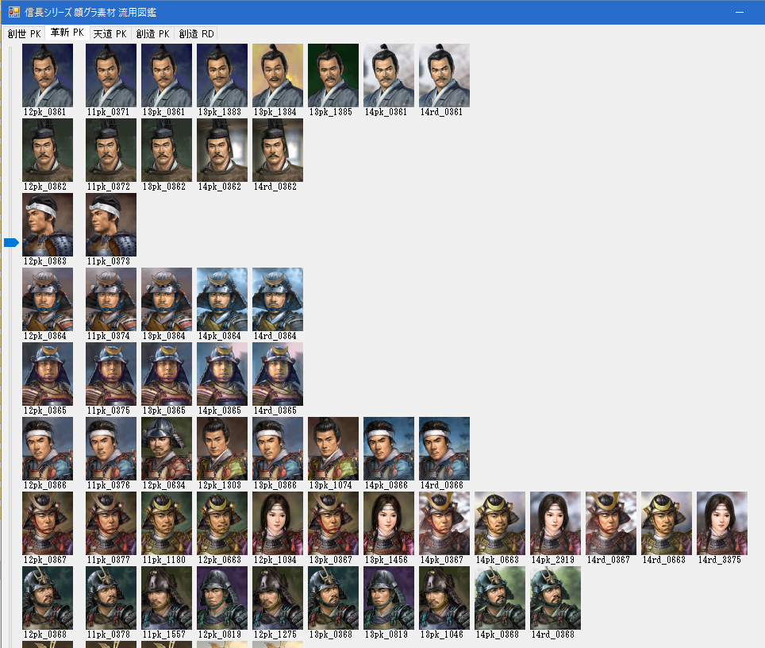
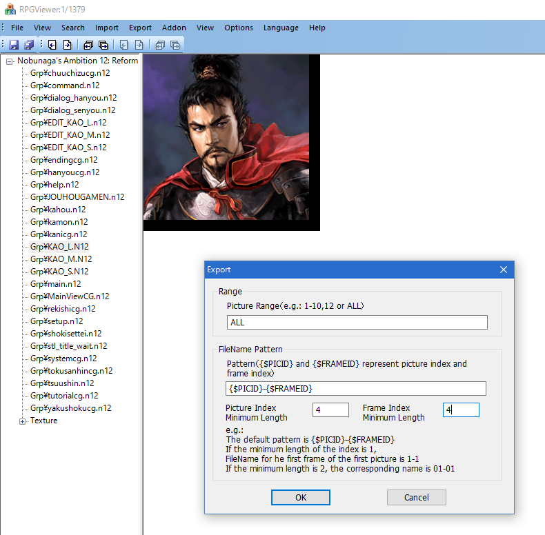
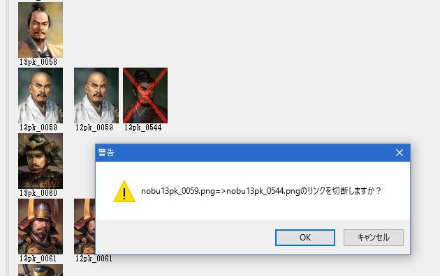

このツールは信長の野望シリーズの顔グラを一種の「画像素材」と考え、
「天下創生 PK」～「創造・戦国立志伝」までのシリーズについて、どのように画素材が流用されていっているか、
といった情報の図鑑です。
どの顔グラが、どのシリーズで新しく書き下ろされたのか、
どの顔グラの一部が流用されて、別の顔グラが作成されていることなど一目瞭然です。

シリーズを選択します。シリーズを起点とした連番が表示されます。
マウス・キーボードの上下・HOMEキーやENDキー・PageUpキーやPageDownキーで操作することが出来ます。
一番左は、現在選択している「シリーズ」の顔グラ連番です。
右に、「流用して作成したと思われるシリーズ名と番号」が並びます
ここで記載されている番号は、武将番号ではなく、Van's houseのRPGViewerで画像を抽出した際に割り振られる番号となります。
Exportの際のAdvanceのオプションとして、以下のように設定しておくとわかりやすいでしょう。

どの画像がどの画像へと流用されているのかのリンク情報。
原則的には、CPUの膨大な自動計算によって作成された情報です。
かなり正確ですが、間違いや、若干の取りこぼしも含まれています。
CPU自動計算により作製されたLink.txt情報を、「間違いである」として否定している情報。
通常、手動で作成します。
2列目以降の顔グラをクリックすると、「リンクを切るか？」といった旨のメッセージが出ます。
リンクを切るとは、「この画像は違う」といった目印となるマークを付け
「UnLink.txt」に情報を付け足す、といった意味となります。
リンクを切ると、画像に「×」マークが出ます。
一度×を付けると、元へと戻すためには、UnLink.txtを手動で編集する必要があります。
GUI(マウス操作)上では元へは戻せません。
(※UnLink.txtの最後の2行をカットすれば、一番最後に行ったリンク切断を元へと戻すことが出来ます。)
